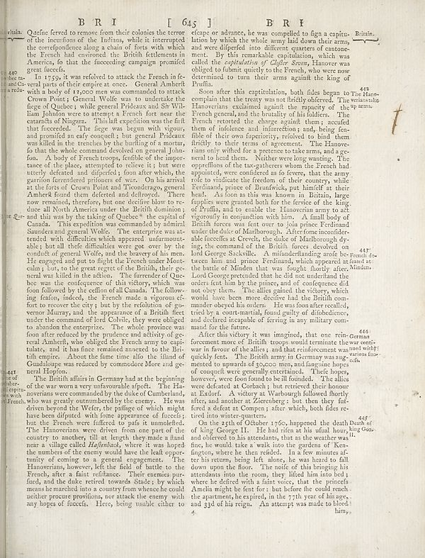

Source · scan and Parse blocks
Layers 2

Parse text by block reading order
- 0Page-headerB R I [ 645 J B R F
- 1Texteleapce or advance, he was compelled to figu a capitu- lation by which the whole army laid down their arms, and were different into different quarters of cantone. By this remarkable capitalism, which was called the _capitalization of Clofler Screw_, Hanover was obliged to identify quickly to the French, who were now determined to turn their arms against the king of Pruffia.
- 2TextSnow after this capitulation, both fides began in The Horror complain that the treaty was not firmly oblivered. The version has Hanoverians explained again the capacity of the up arms. French general, and the mortality of his dollars. The French trusted the change against them, accused them sif violence and infortions, and, being fina- flide of their own footeroriy, refiled to bind them fairly to their terms of agreement. The Hanoveriians only withinled for a presence to take arms, and age- as to heal them. Neither were longrunning. The oppressed of the tax-gatherers whom the French had appointed, were ordered at its fewer, that the army is violated the freedom of their country, while Ferdinand, price of Brunfivick, put himself at their head. A box an this was known in Britain large supplies were granted that for the review of the king of Pruffia, and to enable the Hanoverian army to act vigorously in conjunction with him. A final body of British forces was first over to join people Ferdinand under the dule of Marthborough. After home inconferder to Cevrely, the dude of Marthongdy-ying, the command of the British forces developed on Lord George Skaville. A mindunderfunding arole be-French de- the banin pral Prince Ferdinand, which appeared at least as the battle of Muthish that was fought shortly after Vladimir. Lond forcege pretended that he did not undermined the letters but they the prizes and of consequences did not obey them. The alien gained the victory, which would have been more decline had the British com- mander-doed his outlaw. He was from about are recalled, tried by a court-martial, found guilty of dilobedience, and declined incapable of living in any military com- sent for the future.
- 3TextAfter this victory it was imagined, that one rein-German forment name of Britli troops would terminate these wonti- ing in favor of the duties, said that enforcement was good with quickly fent. The British army in Germany was sug- claims forced to upwards of $2000 men, and financial hopes of consult were generally entrusted. Their hopes, however, even foul found be bell founded. The allies were defeated at Cortach; i but reterved their honour at Erdorf. A victory at Warburgh followed shortly after, and another at Zienberg: but then they fat- fund a defeat at Compen; after which, both fides re- tired into winter-quarters.
- 4TextOn the 31th of October 1760s happened the death Death of King George II. He had rules at his infant born, May 25, and offered to his attendants, that as the weather was fine, he would take a walk into the greatest of Kerry, who?he her than relief. In a few minutes af- ter his return, being left alone, he was heard to fall down upon the floor. The route of the bringing his attendants into the room, they filled him into bed ; where he defined with a faint voice, that the pricesfa Arnels might be far for; but before the could reach the apartment, be co-pied, in the 17th year of his age, and 33d of his reign. An attempt was made to bleed him,
Provenance page_id, checksum, Parse model
- page_id
- britannica:309f765b1ecc83e0a7f7762e44b4a927a7555443:train:2108
- sha256
- 6874128a519b8cf9cd9de001ba48c06556b084267e667c07a65ea596b6b51576
- Parse
- nvidia/nemotron-3.5-parse · finish stop